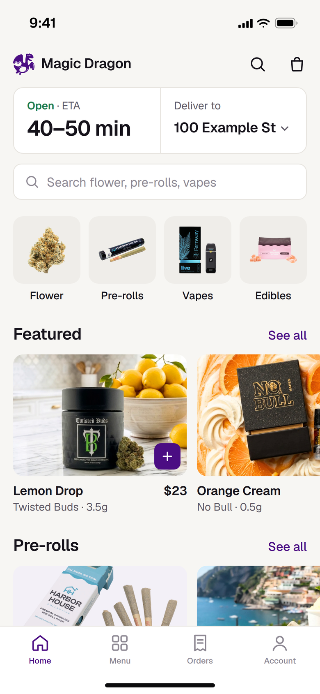
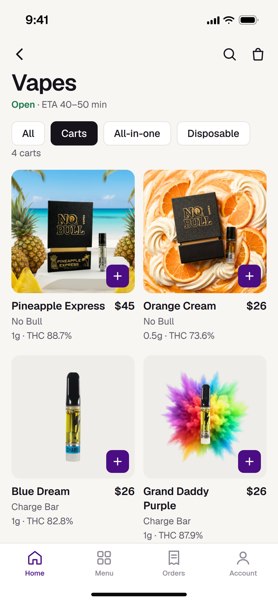
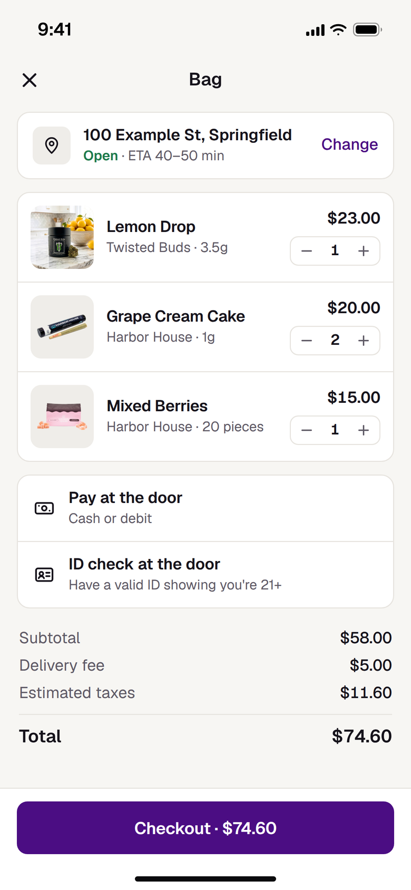
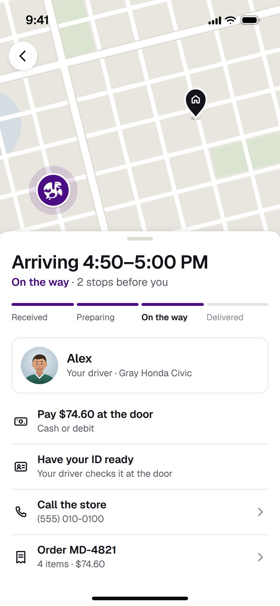
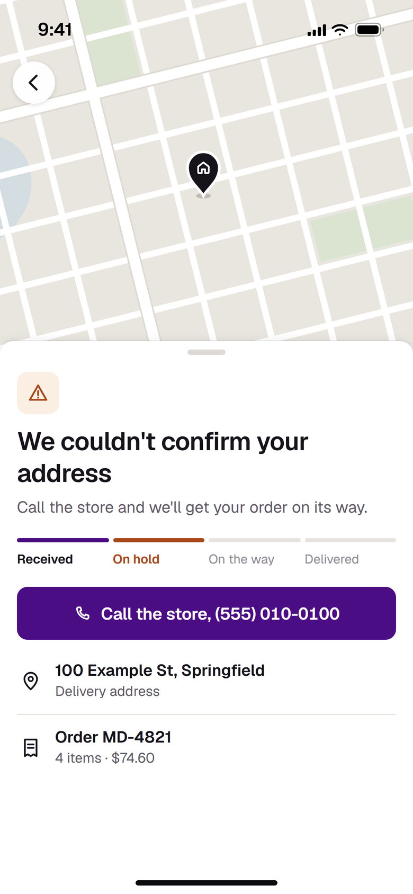
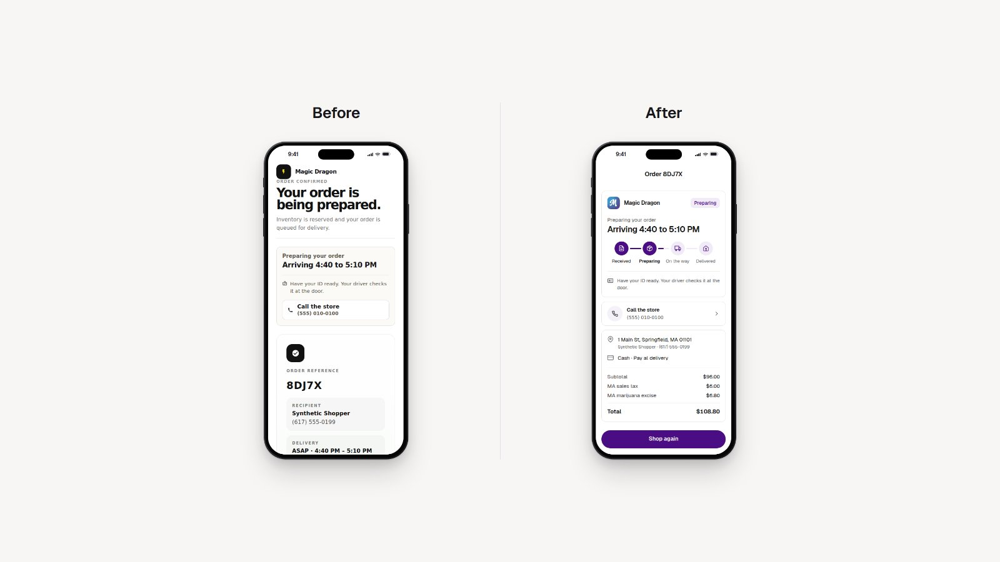
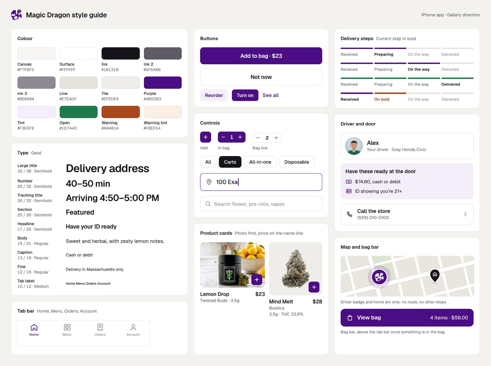

Magic Dragon for iPhone
Magic Dragon is an app for ordering cannabis delivery from licensed stores. Every order comes with rules. Customers have to prove their age, show ID at the door and stay under a daily limit, they can only pay with cash or debit, and the app can't advertise discounts. I designed the iPhone app to handle those rules without getting in the way, and to always show when the order will arrive.
- Type
- Real product, 2026
- Platform
- iOS first, plus the mobile website
- My role
- Founder and design lead: product decisions, flows, UI, motion, Figma system
- Scope
- 24 screens, 4 flows, 194 prototype links, a Figma system

The problem
Most delivery apps follow the same familiar pattern. Cannabis delivery adds a few problems they don't have.
- Apple and Google have different rules. Apple allows apps for ordering from licensed cannabis stores, and Google Play doesn't. So iPhone customers get a native app and Android customers get a website they can install, both built from the same code.
- No discount advertising. The state doesn't allow discount banners or promo tabs, so the app has to rely on clear information and good product photos.
- Someone has to meet the driver. The driver checks ID and takes payment at the door, so customers want an exact arrival time. But the app can't reveal where other customers on the route live.
Goals
Always show when it'll arrive
Home shows a delivery time before anything else. After you order, the time stays live and accurate.
Ask for as little as possible
Age and location are asked once, in a single step. Nothing else is asked until it's needed.
Know what to have ready
Before the driver arrives, the app tells you the total, how you'll pay and that you'll need ID.
Keep other customers private
Customers see their driver only when it's useful to them, and never see anyone else's stop.
Key decisions
A loading animation instead of a spinner
While the menu loads, the dragon logo draws itself line by line, starting with the head and ending with the eyes, then fills in with light purple. If loading takes a while, the drawing starts over, and it always finishes from wherever it left off. I liked the finished drawing enough to use it on the launch screen, because it looks lighter on white than the old solid logo. At small sizes the app uses the M icon instead, since it stays sharp. If Reduce Motion is on, the finished logo just appears.
Age and location in one step
The two questions we have to ask are on the same screen. The app only uses a rough location, rounded to about a kilometer, to pick which store's menu to show. You type your exact address later, when it's needed, and tapping "Not now" never stops you from using the app.


Home starts with the delivery time
Since discount banners aren't allowed, the top of Home shows something more useful: whether the store is open and how long delivery will take, like 40 to 50 minutes. Real product photos do the rest.


Product pages
People mostly want to know how strong a product is, how much they're getting and whether it was tested. THC, size and the lab test date are in one row at the top, the state's required warning is plain text, and the price is on the Add to bag button.

The bag explains what happens at the door
The bag tells you how you'll pay the driver and that they'll check your ID, so you have both ready when they arrive.

Order tracking
Drivers carry several orders at once, so a live map from the start would let customers see where other people live. Instead, tracking shows the delivery window and how many stops are ahead of you, like "2 stops before you." The map only appears once the driver is heading to you, and it shows just the driver and your home. If the driver's location hasn't updated in a while, the marker fades and says when it was last seen.

The driver marker
My first version squeezed the dragon against the edge of the circle, and it was blurry at map size. A smaller dragon is easy to spot on both light and dark maps.

When something goes wrong
If the store is closed, the app says when it opens. If there's a problem with an order, it says what happened and what to do next. If you don't share your location, you just type your address.


Deleting an account
Apple requires apps to let people delete their account, but the state requires stores to keep records for age checks and product recalls. So deleting an account erases your email, addresses, favorites and marketing consent, but keeps your name, phone number, birth date and orders. The app explains this before you confirm.
The website
Android customers order on the website, so I gave its order page the same status card as the app and took out the clutter.

The journey

Try it
Every button works. On a phone it fills the screen.
The Figma file
The file has every screen as editable layers, linked up as a prototype and built on a small design system:
- Color variables for surfaces, text, brand purple, the add-to-bag yellow and status colors.
- Text styles in Geist, from the delivery-time display down to the fine print.
- Components with variants: Button (style and state), Chip, Product card, Add and stepper, the four-step order progress, Driver card (live, updated, last seen), Driver badge and Tab bar.
- Sections for onboarding, shopping, account, orders and tracking, and edge cases, with notes on each screen explaining the decisions.
- A motion page with timing specs for the drawn dragon, the open-now pulse and the driver marker.

How I worked
I set the rules, flows and copy, and used an AI coding assistant to build them into the app and this prototype. That made it easy to try a screen on a real phone and change it the same day.
Results and what's next
- Real numbers go here: orders delivered, repeat customers, support contacts about "where's my order".
- The iPhone app is in pre-release; the website serves Android and desktop customers today.
- Next I'd measure whether the stop count cuts "where's my order" calls, and how many first orders finish after a Not now.
Product names, photos and prices are from the live menu. Customer names, addresses and phone numbers are made up.